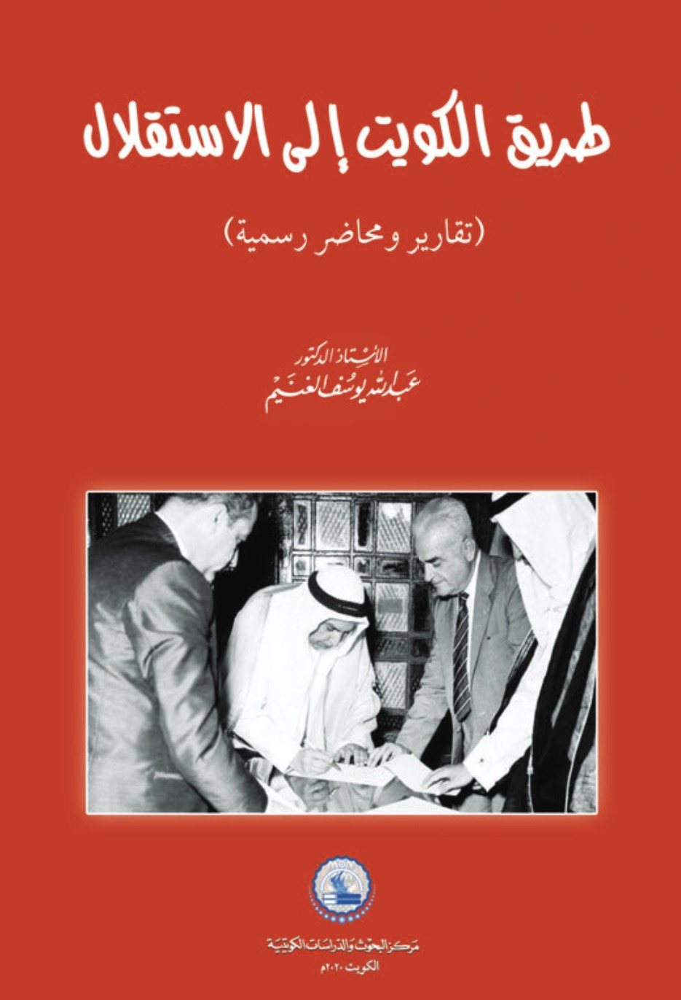

مايو ١٩٦٢م، نشر ٢٠٢٠م · صفحات من كتاب أ.د. عبدالله يوسف الغنيم «طريق الكويت إلى الاستقلال (تقارير ومحاضر رسمية)»، مركز البحوث والدراسات الكويتية، الكويت، ٢٠٢٠م
طريق الكويت إلى الاستقلال: جاسم القطامي في محادثات زيورخ السرية مع العراق، ١٩٦٢م
ما هي
١. في مايو ١٩٦٢م اختار الشيخ عبدالله السالم وفدا برئاسة أحمد العمر (أحمد السيد عمر)، وعضوية جاسم القطامي وكيل وزارة الخارجية وعادل الجراح، للقاء وفد عراقي سرا في زيورخ (ص ٦٧). ٢. وادعى كتاب عراقيون لاحقا أن المحادثات اتفقت على اتحاد فيدرالي، ويذكر المؤلف أن الشاهد الكويتي جاسم القطامي لم يعقب على تلك الرواية، فاتصل به أخوه د. يعقوب يوسف الغنيم، ونقل شهادة جاسم بنصها (ص ٦٣ و٧٢ إلى ٧٦). ٣. وسئل جاسم هل كان سيبحث اتحاد فيدرالي بين الكويت والعراق فأجاب بأن هذا غير صحيح، فلم يكن هناك جدول أعمال، ومثل هذا الأمر له شروط واستعدادات غير متوافرة (ص ٧٥). ٤. وقال جاسم إن الشيخ عبدالله السالم طلب منه حضور لقاء غير حكومي بدعوة من أحمد السيد عمر، فلم يحضر أحد، وحدد موعد ثان فلم يحضر أحد، مما يدل على عدم جدية الداعين. واختار الشيخ عبدالله «رجلا من رجالها هو المرحوم جاسم القطامي» لهذه المهمة (ص ٧٦).
أهميتها
شهادة جاسم نفسه في حادثة مختلف عليها من السنة الأولى لاستقلال الكويت.
صور الصفحات


ملاحظات
نعرض هنا الصفحات الأولى فقط، ويرى أفراد العائلة بعد تسجيل الدخول كل الصفحات وعددها 9.
المصادر
أ.د. عبدالله يوسف الغنيم، طريق الكويت إلى الاستقلال، مركز البحوث والدراسات الكويتية، ٢٠٢٠م، ص ٦٣ و٦٧ و٧٢ إلى ٧٦ و١٩٥
كيف كُتب هذا النص: نسخ صفحات من كتاب منشور.
افتح في الموقع التفاعلي